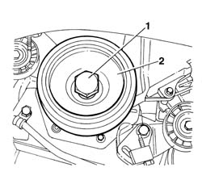
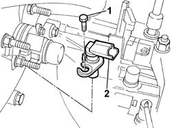
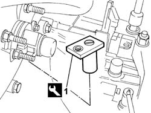
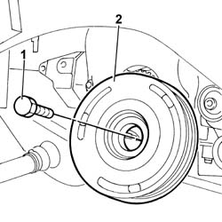

1092A12 CRANKSHAFT PULLEY - R+R FOR VERSIONS WITH AIR CONDITIONER
- Path
- Procedures > 10 ENGINE UNIT > 1092 VARIOUS ENGINE COMPONENT CONTROLS > 1092A CRANKSHAFT PULLEY AND IDLE PULLEYS > 1092A12 CRANKSHAFT PULLEY - R+R FOR VERSIONS WITH AIR CONDITIONER
- Kind
- repair procedure (removal / refitting; the operation number is the code)
- Applies to
- engines: 2.0 16V, 2.8 JTD 8V; all production periods
- Interactive page
- https://sloeber94.github.io/elrnDB-fDct/en/#/244000981
Applies to: engines: 2.8 JTD 8V; all production periods
 Removing
Removing
 Refitting
Refitting- Disconnect the negative battery terminal.
Op. 1092D10 AIR CONDITIONER COMPRESSOR DRIVE BELT - R + R
Op. 1092B51 ALTERNATO/WATER PUMP DRIVE BELT - R+R FOR VERSIONS WITH AIR CONDITIONER
- Fit the flywheel lock on the bellhousing.
 | Description | Code | Function |
|---|---|---|---|
. | Flywheel lock | 1.870.765.001 | Prevent flywheel rotation |
1. Undo the bolt fixing the crankshaft pulley.
2. Remove the crankshaft pulley.

Applies to: engines: 2.8 JTD 8V; all production periods
Refitting
Removing- Fit the pulley in place and tighten the fixing bolt checking the torque.
 | Value - daNm | Fastening | Component | Ø |
|---|---|---|---|---|
. | (crankshaft side) 20 | Bolt | CRANKSHAFT PULLEY | M20 |
- Remove the flywheel lock from the bellhousing.
| Description | Code | Function |
|---|---|---|---|
. | Flywheel lock | 1.870.765.001 | Prevent flywheel rotation |
Op. 1092B51 ALTERNATO/WATER PUMP DRIVE BELT - R+R FOR VERSIONS WITH AIR CONDITIONER
Op. 1092D10 AIR CONDITIONER COMPRESSOR DRIVE BELT - R + R
- Connect the negative battery terminal.
Applies to: engines: 2.0 16V; all production periods
Removing
Refitting- Position the vehicle on a lift.
Op. 7055B54 UNDER-ENGINE GUARD - R R
Op. 4450B04 RIGHT FRONT WHEEL R R
Op. 1092C11 POWER STEERING PUMP DRIVE BELT - R R FOR VERSIONS WITH AIR CONDITIONER
Op. 1092B40 AIR CONDITIONER COMPRESSOR/ALTERNATOR DRIVE BELT - R + R
- Disconnect the electrical connection for the rpm sensor.
1. Undo the retaining bolt.
2. Remove the rpm sensor.

Applies to: engines: 2.0 16V; all production periods
1. Fit the flywheel lock in the housing for the rpm sensor.
| Description | Code | Function |
|---|---|---|---|
1 | Counter-torque | 1.870.765.000 | Flywheel lock |

Applies to: engines: 2.0 16V; all production periods
1. Undo the retaining bolt.
2. Remove the auxiliary shaft drive pulley (1b).

Applies to: engines: 2.0 16V; all production periods
Refitting
Removing- Fit the auxiliary shaft drive pulley and tighten the fixing bolt to torque using the angular tightening tool.
| Value - daNm | Fastening | Component | Ø |
|---|---|---|---|---|
. | 4+51° | Bolt | CRANKSHAFT PULLEY | - |
| Description | Code | Function |
|---|---|---|---|
. | Torque wrench | 1.860.942.000 | Angular tightening |
- Remove the flywheel lock fitted previously.
| Description | Code | Function |
|---|---|---|---|
. | Counter-torque | 1.870.765.000 | Flywheel lock |
- Fit the rpm sensor in the housing on the bellhousing and tighten the fixing bolt.
- Connect the electrical connection for the rpm sensor.
Op. 1092B40 AIR CONDITIONER COMPRESSOR/ALTERNATOR DRIVE BELT - R + R
Op. 1092C11 POWER STEERING PUMP DRIVE BELT - R R FOR VERSIONS WITH AIR CONDITIONER
Op. 4450B04 RIGHT FRONT WHEEL R R
Op. 7055B54 UNDER-ENGINE GUARD - R R
- Remove the vehicle from the lift.
Topics linked from this page (6)
- 1092B40 AIR CONDITIONER COMPRESSOR/ALTERNATOR DRIVE BELT - R + R
- 1092B51 ALTERNATO/WATER PUMP DRIVE BELT - R+R FOR VERSIONS WITH AIR CONDITIONER
- 1092C11 POWER STEERING PUMP DRIVE BELT - R R FOR VERSIONS WITH AIR CONDITIONER
- 1092D10 AIR CONDITIONER COMPRESSOR DRIVE BELT - R + R
- 4450B04 RIGHT FRONT WHEEL R R
- 7055B54 UNDER-ENGINE GUARD - R R